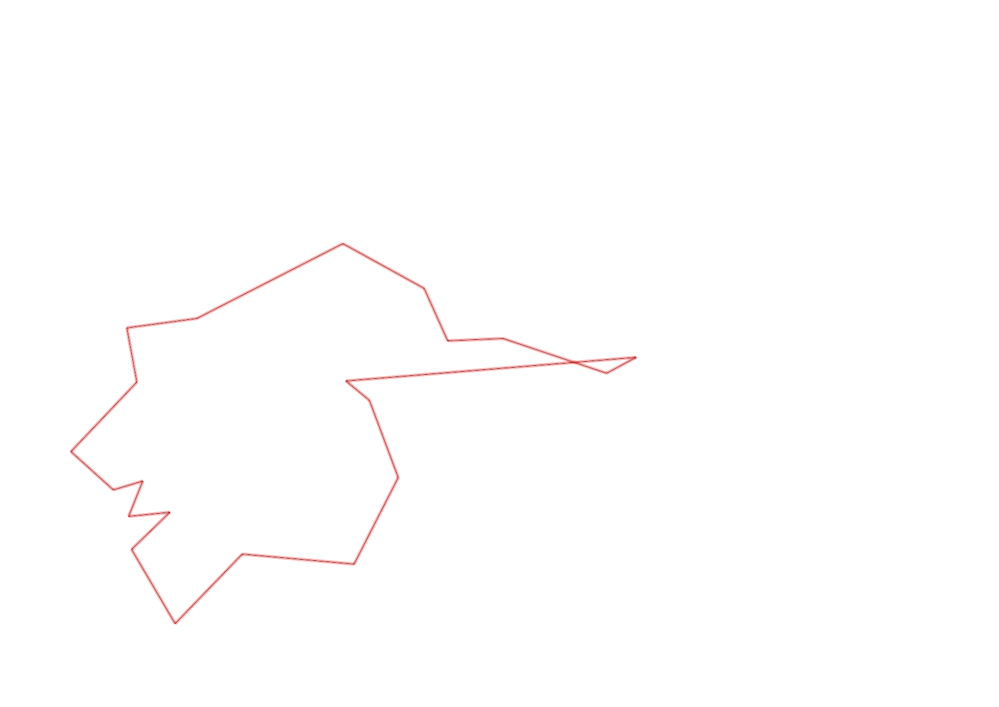
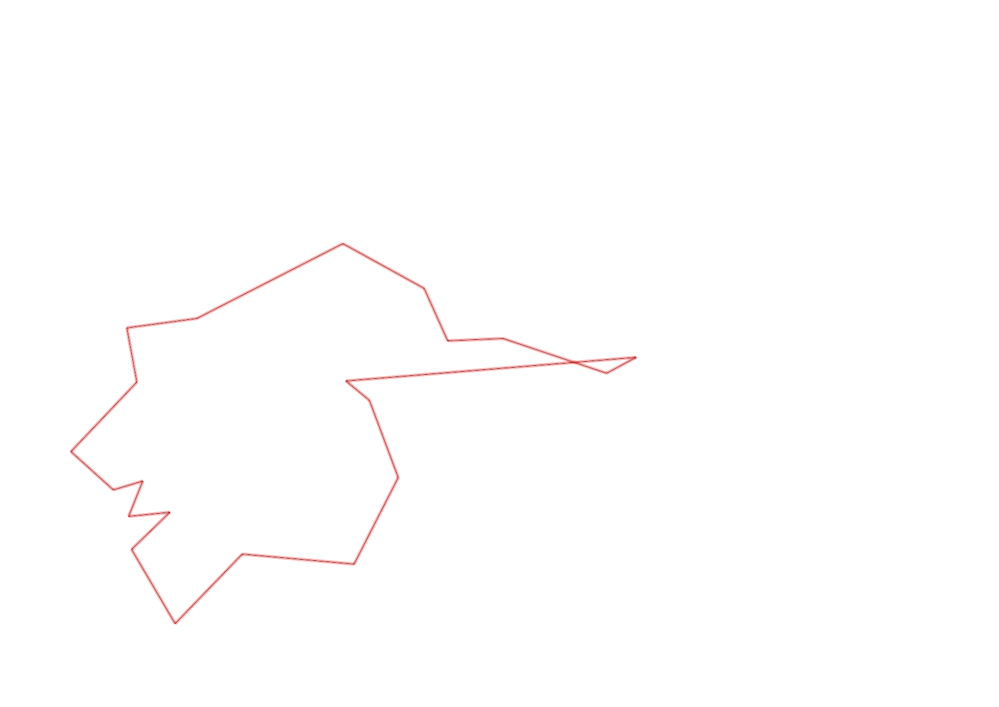

| Control |
Points |
Time Punched |
Distance |
Your Time |
Pace |
Place |
Fastest Time |
Median Time |
% Behind Fastest |
| 127 |
20 |
|
0.06 |
0:01:04 |
17:46 |
28 / 30 |
0:00:01 |
0:00:32 |
6300% |
| 42 |
40 |
|
0.17 |
0:02:09 |
12:38 |
14 / 20 |
0:01:06 |
0:01:52 |
95% |
| 61 |
60 |
|
0.21 |
0:03:16 |
15:33 |
5 / 20 |
0:02:20 |
0:03:34 |
40% |
| 59 |
50 |
|
0.24 |
0:02:16 |
09:26 |
6 / 19 |
0:01:47 |
0:02:30 |
27% |
| 77 |
70 |
|
0.21 |
0:02:39 |
12:37 |
11 / 17 |
0:01:25 |
0:02:33 |
87% |
| 40 |
40 |
|
0.18 |
0:02:45 |
15:16 |
12 / 18 |
0:01:16 |
0:02:38 |
117% |
| 41 |
40 |
|
0.11 |
0:01:27 |
13:10 |
12 / 20 |
0:00:28 |
0:01:07 |
210% |
| 71 |
70 |
|
0.09 |
0:01:07 |
12:24 |
3 / 12 |
0:00:33 |
0:01:12 |
103% |
| 54 |
50 |
|
0.08 |
0:00:40 |
08:20 |
11 / 33 |
0:00:27 |
0:00:45 |
48% |
| 69 |
60 |
|
0.07 |
0:02:30 |
35:42 |
15 / 20 |
0:01:00 |
0:01:56 |
150% |
| 53 |
50 |
|
0.12 |
0:01:36 |
13:20 |
7 / 26 |
0:01:16 |
0:01:51 |
26% |
| 44 |
40 |
|
0.2 |
0:01:45 |
08:45 |
12 / 22 |
0:00:39 |
0:01:40 |
169% |
| 32 |
30 |
|
0.12 |
0:00:59 |
08:11 |
6 / 22 |
0:00:43 |
0:01:19 |
37% |
| 63 |
60 |
|
0.15 |
0:01:16 |
08:26 |
5 / 25 |
0:01:05 |
0:01:29 |
16% |
| 107 |
100 |
|
0.35 |
0:03:35 |
10:14 |
8 / 22 |
0:02:14 |
0:03:49 |
60% |
| 57 |
50 |
|
0.2 |
0:03:11 |
15:55 |
10 / 22 |
0:01:54 |
0:03:53 |
67% |
| 92 |
90 |
|
0.12 |
0:08:49 |
1:13:28 |
18 / 18 |
0:02:10 |
0:04:22 |
306% |
| 47 |
40 |
|
0.12 |
0:01:07 |
09:18 |
1 / 16 |
0:01:07 |
0:04:40 |
0% |
| 48 |
40 |
|
0.23 |
0:08:34 |
37:14 |
7 / 7 |
0:02:14 |
0:03:31 |
283% |
| 64 |
60 |
|
0.07 |
0:01:19 |
18:48 |
11 / 14 |
0:00:38 |
0:01:05 |
107% |
| Finish |
0 |
|
0.62 |
0:05:25 |
08:44 |
1 / 2 |
0:05:25 |
0:06:42 |
0% |
Total Distance Covered: 3.72km
Points Scored: 1060
Late Penalty: 0
Final Score: 1060
Total Time: 0hours 57minutes 29seconds
Efficiency: 284.95 points/km
 
